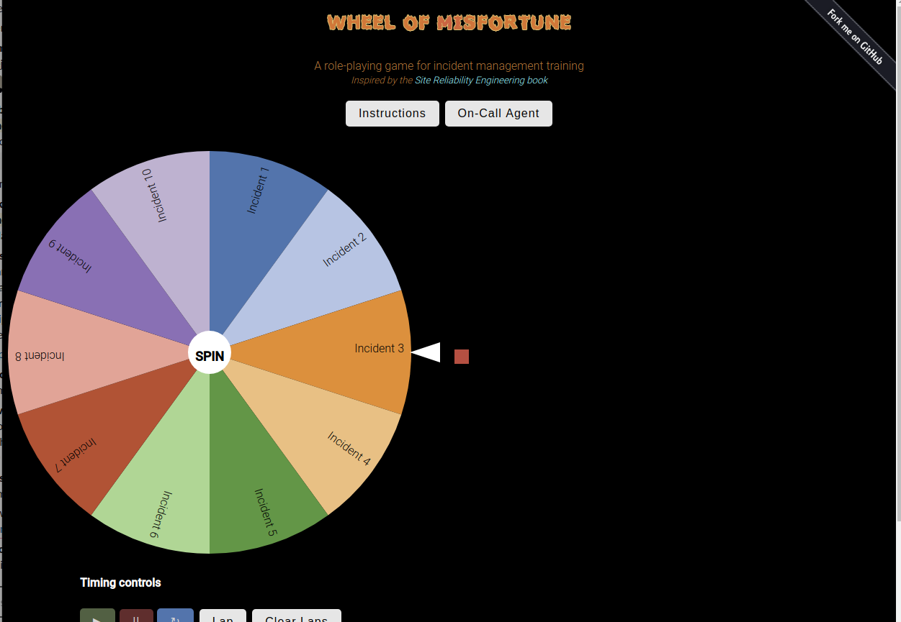
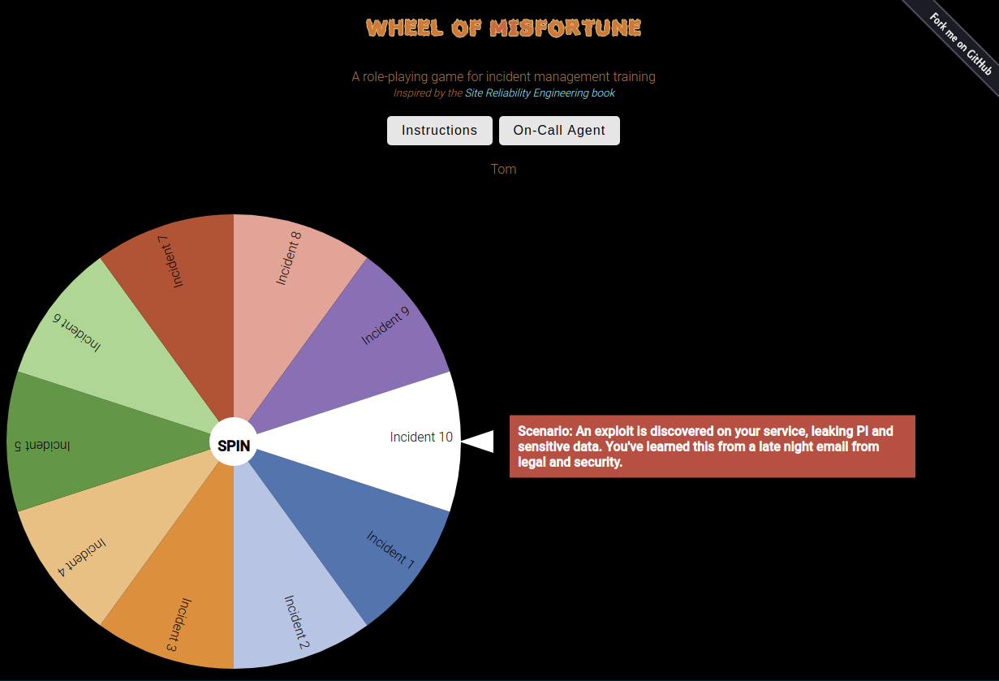

Wheel Of Misfortune
The Game
A role-playing game for incident management training
The Wheel of Misfortune is best done with an on-call group but can be expanded to fit larger groups up to the entire enterprise depending on how thorough and complex you make your scenarios.
My team has found that this works best as a monthly activity, and in general we get through 2 incidents in about an hour as we select an on-call agent using the random picker, spin the wheel (terrifying), work through the incidents – with team leads adding information and hints or extra challenges along the way, then a wrap up of the incident by going through a mock Root Cause Analysis/Blameless Postmortem.
Hosted
A live demo of this project is available to view at wom.twstewart.me
It is hosted as a static site in an AWS S3 bucket, a walk through on setting up a static website using S3 is available below
Testing
One can use the included Dockerfile to test and/or host a local version of the game…or just open the index.html in your favorite browser (low tech testing)
$ docker build -t wheel-of-misfortune-test .
$ docker run --name wom-test -d -p 8080:80 wheel-of-misfortune-test
Screenshots
The Wheel of Misfortune Welcome page

Select an On-call Agent
Spin the wheel and get started solving incidents

Walkthrough: Hosting the Wheel of Misfortune
As the app/live demo is fairly basic HTML/javascript project, I found that the simplest way (and cheapest) was to configuring an AWS S3 bucket to host a live static website.
How to:
- Create a new S3 bucket, name it the same as the domain name you wish to host ‘wom.twstewart.me’
- Use default settings for S3 bucket
- On the Properties tab, enable Versioning and Static Website Hosting
- For Static Website Hosting:
- index document = index.html
- error document = index.html
- Save
- On the Permission tab, turn OFF public access blocks
- On Bucket Policy Tab, you can restrict the IP’s allowed to connect to the website, obviously, mine is open to all public, if you wish to do the same it is recommended to restrict it to specific IPs
-
-
{ "Version": "2012-10-17", "Id": "S3PolicyId1", "Statement": [ { "Sid": "IPAllow", "Effect": "Allow", "Principal": "*", "Action": "s3:GetObject", "Resource": "arn:aws:s3:::wom.twstewart.me/*", "Condition": { "IpAddress": { "aws:SourceIp": "0.0.0.0/0" } } } ] }
-
- On CORS tab, enable this policy to allow systems to read the incident_response.json
-
<?xml version="1.0" encoding="UTF-8"?> <CORSConfiguration xmlns="http://s3.amazonaws.com/doc/2006-03-01/"> <CORSRule> <AllowedOrigin>*</AllowedOrigin> <AllowedMethod>GET</AllowedMethod> <AllowedHeader>*</AllowedHeader> </CORSRule> </CORSConfiguration>
-
-
- Upload site files to the S3 bucket
- See if you can hit the static website URL, and if perms are correct all assets should load
- Then if you want to set up an easy name to go to the s3 bucket URL, on your DNS system, create a CNAME redirect like:
- CNAME wom.twstewart.me wom.twstewart.me.s3-website-us-east-1.amazonaws.com
- Congratulations! You have an awesome website hosting in AWS on an S3 bucket.
Credits
The concept of a Wheel of Misfortune comes from the Google's Site Reliability Engineer ebook, and the tool was originally created by dastergon and then I forked and expanded to fit my team’s needs, added ‘dark mode’ and a random on-call agent selector at My Github